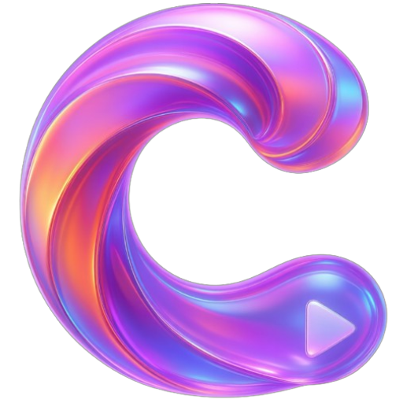

CleanIPTV Mobile
O player mais elegante e inteligente para o seu smartphone. Agora com funcionamento offline-first e sincronização em tempo real com o PC.
Versão 2.0.4 • 100% Seguro
Player Independente
Assista aos seus conteúdos de qualquer lugar, mesmo longe do computador principal.
Sincronização Mágica
Favoritos e "Continuar Assistindo" atualizam automaticamente entre celular e PC.
Controle Remoto
Use seu celular para navegar e controlar o aplicativo da TV ou Computador.
Como Instalar?
-
1Clique no botão roxo acima para baixar o arquivo .apk no seu celular.
-
2Ao abrir, o Android pode pedir permissão de segurança. Vá em Configurações e ative "Permitir desta fonte".
-
3Clique em Instalar, abra o aplicativo e aproveite!